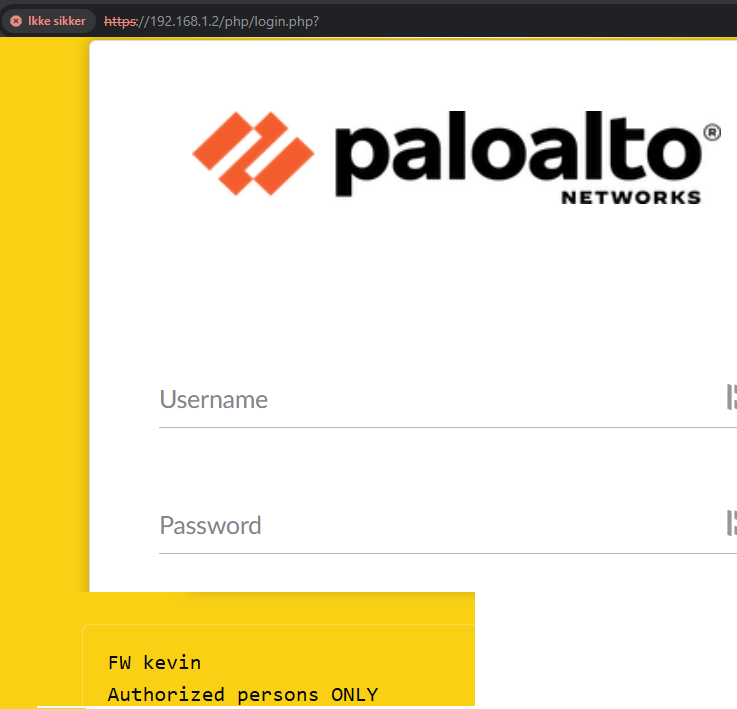

Configuring a Palo Alto NGFW for Home Use
Bringing enterprise-grade security to a home network is both rewarding and practical in today’s connected world. Here’s a step-by-step guide to configuring a Palo Alto Next-Generation Firewall (NGFW) for personal use.
Step 1: Understand Your Network Topology
A typical home setup with a Palo Alto NGFW looks like this:
ISP Modem/Router (Bridge Mode) → Palo Alto NGFW → Home Devices (Switch, Wi-Fi Router, PCs, IoT devices, etc.)
The ISP modem/router should be set to bridge mode to pass the public IP directly to the firewall. The NGFW will handle DHCP, NAT, and routing for your home network.
Step 2: Connect Your Firewall
Physical Connections:
- Connect the ISP modem/router (in bridge mode) to the WAN port of the firewall (e.g., Ethernet1/1).
- Connect your home switch, Wi-Fi router, or a PC to the LAN port of the firewall (e.g., Ethernet1/2).
Management Port:
- Connect your PC to the firewall’s Management Port to configure it.
- Assign your PC a static IP address on the same subnet as the firewall’s default management IP (
192.168.1.1). For example, use192.168.1.2.
Step 3: Access the Firewall’s Web Interface
1. Open a web browser and navigate to https://192.168.1.1.
2. Log in using the default credentials:
- Username: admin
- Password: admin
3. Change the default password immediately for security.
Step 4: Initial Setup
1. Assign IPs to Interfaces
- Go to Network > Interfaces.
- Configure Ethernet1/1 (WAN):
- Type: Layer3
- IP Address: Select DHCP if your ISP assigns it dynamically or use Static if your ISP provides specific IP details.
- Configure Ethernet1/2 (LAN):
- Type: Layer3
- IP Address: Assign a static IP such as
192.168.10.1/24.
2. Create a Virtual Router
Go to Network > Virtual Routers. Create a new router and assign both Ethernet1/1 (WAN) and Ethernet1/2 (LAN) to it.
3. Set Up NAT
- Go to Policies > NAT and create a new rule:
- Name: Internet-Access-NAT
- Source Zone: LAN
- Destination Zone: WAN
- Source Address: 192.168.10.0/24
- Destination Address: Any
- Translated Packet: Use Dynamic IP and Port (select the interface IP of
Ethernet1/1for translation).
4. Set Up Security Policies
- Go to Policies > Security.
- Create an allow rule for internal devices to access the internet:
- Name: Allow-LAN-to-Internet
- Source Zone: LAN
- Destination Zone: WAN
- Source Address: Any
- Destination Address: Any
- Application: Any
- Service: Any
- Action: Allow
Step 5: DHCP Server Configuration
- Go to Network > DHCP.
- Enable DHCP on
Ethernet1/2(LAN): - Interface: Ethernet1/2
- DHCP Range: Define a range of IP addresses for your home devices (e.g.,
192.168.10.100to192.168.10.200). - DNS Servers: Specify DNS servers (e.g., Google’s DNS:
8.8.8.8and8.8.4.4or your ISP’s DNS). - Gateway: Set the default gateway to
192.168.10.1(LAN interface IP). - Save and commit your changes.